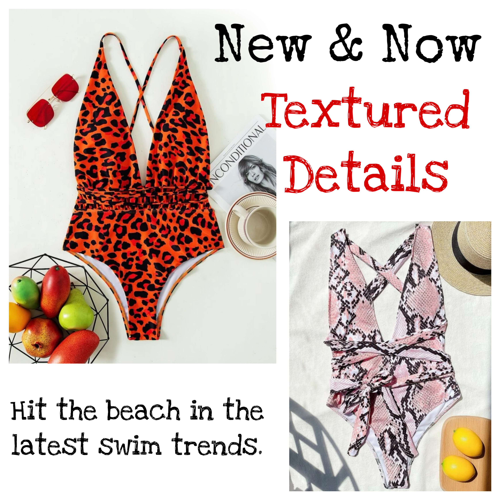

Baby Beach

Baby Beach is known for its iconic feminine designs,
immaculate fit, soft-to-touch feel and enduring quality -
all of which are the brand’s top priorities when adding
any new pieces to the range.
SHOP NOW

Baby Beach founder, Maryia Engel, is known as “swimwear connoisseur” to many,
but more noticeably for her strong advocacy of body positivity.
Acting as inspiration to millions of women across the world, Maryia created Baby Beach as
a continuation of her goal to instill confidence and power within her female audience.
SHOP NOW

An essential mode of achieving this is ensuring her designs are based off timeless pieces she know will compliment
and flatter the female form, as opposed to recreating size-specific,
temporary trends.
SHOP NOW

Baby Beach is designed especially for the stylish girl who is minimalistic, confident, and carefree.
Whether she’s lying on the beach in the tropics soaking up the sun, sitting poolside with her friends,
or swimming in the ocean, she’s happy and glowing because she feels comfortable and confident in her own skin.
SHOP NOW